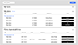
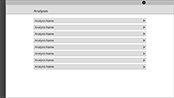

I interned at Visier Inc. for 8 months in 2017 as a UX Designer. My project of focus was the unification
of disparate information architecture systems with extensive application of modular design practices.
I did the
information architecture
and
wireframing
.
I also worked on some
graphic design
.
I used
sketches on notepads
,
Illustrator
, and
Sketch
.
I formulated
user journeys
, and I flexed my
UX Design
muscles.
Context
Visier Inc. is a
workforce solutions (fig. 1) company. They make software that provides insights on talent acquisitions
and onboarding processes, as well as tools for analysing and planning employee movement in the organization
to help with the appropriate acquisition, retention, and promotion of the workforce.
NOTE: In compliance with my non-disclosure agreement with Visier, the screens highlighted in this case
study have been recreated as wireframes.
Fig. 1 The suite of Visier software
Design Challenge

Fig. 2 Workfore Planning wireframe (as of 2017)

Fig. 3 Workforce Analysis wireframe (as of 2017)
When I started my term at Visier, two of the flagship products, Workforce Planning (WFP) and Workforce
Analytics (WFA) displayed plans and analyses, respectively, as a list. These lists, however, were
not consistent in their information architecture:
plans (fig. 2) were listed in multiple buckets with multiple points of metadata, whereas
analyses (fig. 3) were listed as simplified links. Additionally, WFP was being ported to the
platform upon which WFA was based.
Design Approach
In an effort to bring a modular UX design approach to the organization, I worked to design a consistent
information architecture for showing items as a list. The first step towards achieving this was to
extract out points of
metadata (fig. 4) and actions common to list items in each product. I subsequently took measures
to ensure that this component was reusable in its implementation, which included prototyping, as
well as making sure that the interface was flexible enough to respond to novel contexts and potential
visual redesigns.
Fig. 4 Reconciling metadata between plans and analyses
In WFP, users can share plans with other users, as well as assign them to users as tasks. To manage the multiple scenarios
(eg. plans the user has assigned, plans assigned to the user, plans the user has shared with another,
and so on), the information architecture was split up into multiple buckets, one per such a case.
Although search worked across all the buckets, this made navigation, scanning, and performing batch
actions unintuitive.
The Solution
In collaboration with the stakeholders, I made the decision introduce a more robust notion of authorship.
It was agreed that the bucketing system needed to be retained. But with the introduction of authorship
it could be tempered. For instance, “My Plans” and “Plans shared with me” could be listed under “Plans”
and distinguished by supplementarily surfacing the author of the plan.
Rather than stress testing the completed using a complex workflow, I started with said
complex workflow (fig. 5) and circumambulated it to ensure that the design serves its purpose.
Fig. 5 Reconciling metadata between plans and analyses
Summary
The reorganization of the information architecture, the introduction of authorship, and a new complex
workflow culminated in the completion of the final spec (fig. 6). The project imparted knowledge on
designing microinteractions under an overarching narrative and a modular approach to UX design that
results in reusable components that are effective, yet efficient.